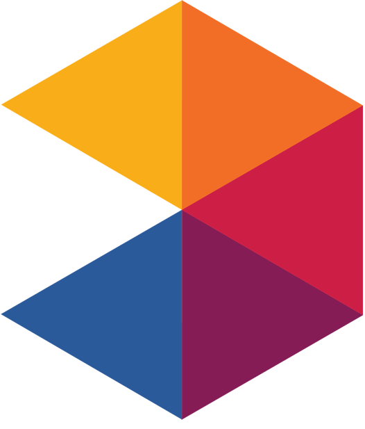

멤라이즈 Memrise
멤라이즈(Memrise)는 플래시카드의 분산 반복을 사용해 학습 속도를 높이는 영국의 언어 학습 플랫폼이다. 사용자가 만든 커뮤니티 강좌와 공식 강좌로 여러 언어를 다룬다.
최종 업데이트

멤라이즈는 어떤 브랜드인가
멤라이즈는 분산 반복 방식의 플래시카드로 단어와 구문을 익히게 하는 영국의 언어 학습 플랫폼이다. 사용자는 오디오와 사진을 곁들인 단어·구문 목록으로 개인 맞춤형 강좌를 만들 수 있고, 이를 강좌 카탈로그에 공개해 커뮤니티와 공유할 수 있다.
이런 기능 덕분에 시간이 지나면서 인기 언어뿐 아니라 제한된 자원으로 배우는 언어와 특정 분야를 다루는 다양한 커뮤니티 강좌가 쌓였다. 멤라이즈가 직접 만든 공식 강좌도 있으며, 2025년 2월 현재 영어 사용자를 위한 35개 언어의 공식 자료를 보유하고 있다.
2023년부터는 공식 과정에 GPT-3 기반 AI 언어 파트너를 결합했다. 공식 과정은 커뮤니티 과정에 포함된 대부분의 언어를 다루지 않는다.
멤라이즈는 어떻게 시작되고 성장했나
멤라이즈는 2010년 Ben Whately와 Ed Cooke가 설립했다. 사용자가 직접 단어와 구문 목록으로 강좌를 만들어 공유할 수 있는 구조를 바탕으로 성장했다.
2012년에는 출시 후 2년도 채 되지 않아 카탈루냐어부터 아이티 크리올어까지 약 100개 언어의 자료를 크라우드소싱했다. 이러한 자료는 인기 언어뿐 아니라 제한된 자원으로 배우는 언어와 특정 분야에도 유용한 것으로 입증되었다.
이후 커뮤니티 강좌 외에 공식 강좌를 갖추었고, 2023년부터는 공식 과정에 GPT-3 기반 AI 언어 파트너를 결합했다.
멤라이즈의 브랜드 아이덴티티는 무엇인가
사용자가 만든 커뮤니티 강좌와 분산 반복 플래시카드, 공식 강좌의 GPT-3 기반 AI 언어 파트너를 결합한 영국의 언어 학습 플랫폼이다.
멤라이즈의 대표 제품과 서비스는 무엇인가
멤라이즈의 핵심 서비스는 분산 반복 플래시카드 기반의 언어 학습이다. 커뮤니티 강좌는 사용자가 오디오와 사진을 곁들인 단어·구문 목록으로 만들어 강좌 카탈로그에 공개한 것이다.
공식 강좌는 2025년 2월 현재 영어 사용자를 위한 35개 언어로 제공되며, 아랍어·중국어·프랑스어·한국어·일본어 등이 포함된다. 아랍어, 중국어, 네덜란드어, 프랑스어, 독일어, 힌디어 등 영어 외 언어 사용자를 위한 자료도 개발되었다.
학습자가 새로운 정보를 기억하도록 돕는 사용자 생성 기억 보조 도구인 멤스(mems)는 2022년 9월 이후 사이트에서 완전히 제거되었다.
멤라이즈는 지금 어떤 상태인가
2025년 2월 현재 멤라이즈는 영어 사용자를 위한 35개 언어의 공식 자료를 보유하고 있다. 2023년부터 공식 과정은 GPT-3 기반 AI 언어 파트너와 결합되어 학습자가 인간과 유사한 대화를 연습할 수 있다.
공식 과정은 커뮤니티 과정에 포함된 대부분의 언어를 다루지 않으며, 언어와 관련 없는 공식 자료도 없다. 멤스 기능은 2022년 9월 이후 제거되었다.
멤라이즈 로고는 어떻게 변해왔나
자주 묻는 질문
멤라이즈는 어느 나라 브랜드인가요?
멤라이즈는 영국의 기술·전자 브랜드입니다.
멤라이즈는 언제 설립되었나요?
멤라이즈는 2010년 설립되었습니다.
멤라이즈의 브랜드 아이덴티티는 무엇인가요?
사용자가 만든 커뮤니티 강좌와 분산 반복 플래시카드, 공식 강좌의 GPT-3 기반 AI 언어 파트너를 결합한 영국의 언어 학습 플랫폼이다.
멤라이즈의 대표 제품은 무엇인가요?
멤라이즈의 핵심 서비스는 분산 반복 플래시카드 기반의 언어 학습이다.
멤라이즈는 현재 어떤 상태인가요?
2025년 2월 현재 멤라이즈는 영어 사용자를 위한 35개 언어의 공식 자료를 보유하고 있다.
멤라이즈의 창업자는 누구인가요?
멤라이즈의 창업자는 Ben Whately, Ed Cooke입니다(위키데이터 기준).
멤라이즈의 본사는 어디에 있나요?
멤라이즈의 본사는 옥스퍼드에 있습니다(위키데이터 기준).
출처와 검증
멤라이즈 관련 참고: 공식 웹사이트 · 위키데이터 Q3249419 · 한국어 위키백과 · 영어 위키백과. 브랜드명은 한글과 원어를 함께 표기하되 데이터에 없는 표기는 만들지 않습니다. 기원 국가·설립연도는 검수된 정의문에서 확인된 값을 우선하고, 없을 때만 공식 웹사이트 URL이 일치하는 위키데이터 개체의 값을 씁니다. 위키데이터 값은 2026-11-14 기준입니다.